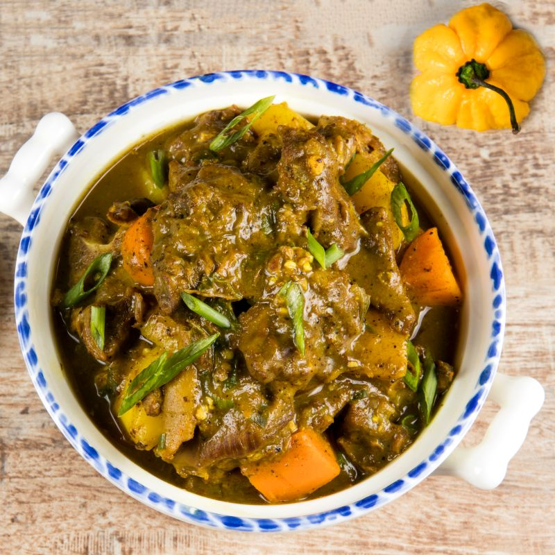

Curry Goat
Homemade Aubergine Salad

Description
This is my famous home-made Jamaican Curry Goat
It is a family favourite!
Ingredients
- 3- 3 1/2 pounds goat meat (cut in chunks)
- ¼- ½ cup cooking oil
- 2 teaspoons minced garlic
- 1 -2 teaspoons minced ginger
- 1 medium onion sliced
- 4-5 Tablespoons
- 1- teaspoon white pepper
- 1-2 teaspoons fresh thyme
- 2 green onions sliced
- 2-3 medium potatoes
- 1 Tablespoon tomato paste
- 1 scotch bonnet pepper
- Season goat with, salt and pepper. Set aside
- In a large pot, heat oil over medium heat, until hot, and then add the goat meat sauté stirring, frequently,
any browned bits off the bottom of the pot, until goat is brown.
- Then add curry, stir for about 1-2 minutes.
- Add the garlic,ginger, white pepper, onions,thyme, tomato paste, scallions (green onions) and scotch bonnet
pepper stir for about a minute.
- Then pour in just enough water to cover the goat and bring to a boil and let it simmer until tender
(depending on the goat size and preference) about 2 hours or more, stirring the saucepan occasionally and
adding more water as needed..
- About 15-20 minutes before you remove from the stove add potatoes and bouillon powder. Continue cooking
until potatoes are tender, if you want really thick curry goat let the potatoes cook even more .
- You may adjust thickness of soup with water or stock.